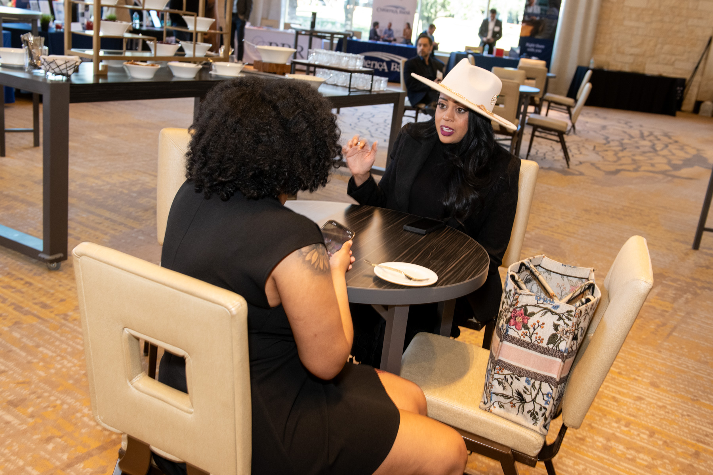
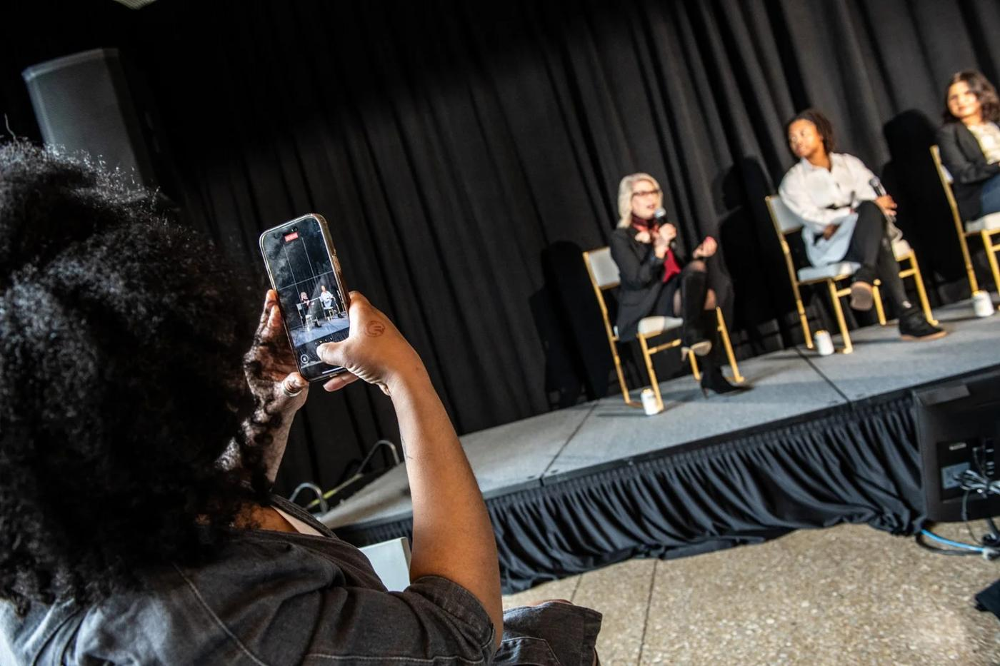
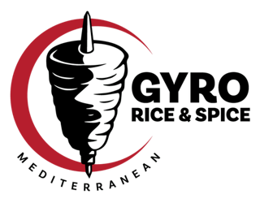
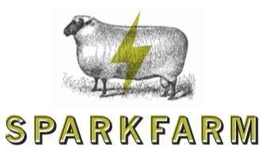

Helping brands show up with clarity through intentional social media and storytelling


Meet the Founder
Nikhael is a creative marketing professional with over four years of experience helping brands show up with clarity, intention, and authenticity on social media. To her, social media isn’t just about showing up consistently; it’s about telling stories that resonate with the right audience and build genuine connection.
Since completing her degree in Media Arts and Studies at the University of Kentucky in 2021, Nikhael has helped businesses craft strategic social media approaches that move content seamlessly from development to audience connection. She specializes in translating brand identity into compelling short-form content and behind-the-scenes storytelling that feels genuine while driving measurable growth.
What sets Nikhael apart is her focus on audience and guest engagement as a foundation for long-term brand loyalty. She partners with clients as an extension of their team, creating social media strategies that not only increase visibility, but foster trust, community, and lasting relationships.
Work With UsI work with brands and teams to document, shape, and share experiences in a way that feels natural, engaging, and true to who they are. From real moments to meaningful stories, this is where it all comes to life.
Behind the Scenes Content
We capture behind-the-scenes moments through short-form photo and video content, focusing on the process, people, and details behind events and productions. From setup through final moments, this content provides a genuine look that adds depth, personality, and shareable value to your brand.
See the work →Corporate Event Content
Summits · Symposiums · ConferencesSocial media content creation highlighting the before, during, and after of your corporate events to build anticipation and extend audience reach. From pre-event teasers and key highlights to live coverage and post-event recaps, we help showcase your brand and keep your audience engaged at every stage.
See the work →Guest Experience Content
Pop-Ups · Sporting Events · City GatheringsCapturing the energy and atmosphere of guest experiences including pop ups, sporting events, and city gatherings. We highlight authentic moments, audience interaction, and the overall experience through intentional content.
See the work →Services We Offer
End-to-end management of your social media platforms to ensure consistent posting, brand alignment, and audience engagement. This service covers content scheduling, community management, performance monitoring, and ongoing optimization so your social presence stays active, relevant, and growth-focused without you having to manage it daily.
A data-driven approach to building a clear, actionable roadmap for your social media presence. This includes platform selection, content pillars, audience targeting, posting cadence, and growth goals—designed to align your social media efforts with your overall business objectives and deliver measurable results.
One-on-one guidance for businesses that want expert direction without full management. Consulting sessions focus on auditing your current platforms, identifying gaps, refining content direction, and providing clear next steps so you can confidently execute your own social media strategy.
Creation of engaging, scroll-stopping short-form content optimized for platforms like Instagram Reels, TikTok, and YouTube Shorts. This service focuses on trend-aware videos designed to increase reach, engagement, and visibility while maintaining authenticity and consistency.
Authentic, behind-the-scenes content that showcases the people, processes, and personality behind your brand. This type of content builds trust, strengthens brand connection, and helps humanize your business by giving your audience a genuine look at how things work beyond the polished final product.
Data That Tells a Story
These numbers represent more than performance—they show how intentional storytelling builds reach, engagement, and trust.
Multi-year client retention (4+ years)
Our Clients


Creative, reliable, and genuinely passionate about what they do.Former Customer
A professional team that delivers on their promises.Former Customer
Their attention to detail and commitment to quality truly stood out. We’ve already recommended them to others.Former Customer
Let’s be social media friends!
Not sure where to start with your social media, or ready to take it to the next level? A free consultation is a relaxed space to talk through your goals, ideas, and challenges. Together, we’ll explore what’s possible and see if working together feels like the right fit.